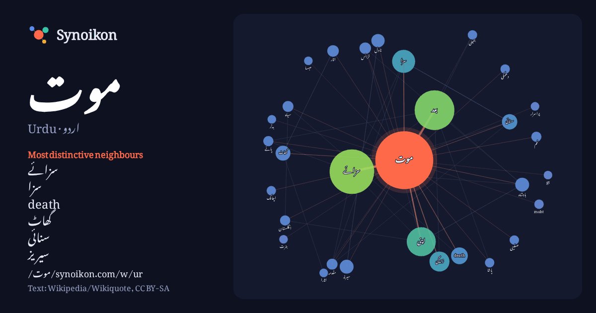

اردو · Urdu · popular word
موت
“death” · The words found around it in 906 instances from Urdu Wikipedia, Wikiquote.

Most distinctive neighbours
- سزائے 103×
- سزا 23×
- death 20×
- گھاٹ 14×
- سنائی 14×
- سیریز 9.0×
- اتار 8.7×
- moht 6.9×
- انگلستان 6.9×
- جنینی 6.9×
- زندگی 6.8×
- سیاہ 6.8×
- غم 6.8×
- مقدمہ 6.7×
- ناول 6.6×
- صلیبی 6.3×
- پانے 6.2×
- دھمکی 6.2×
- اپنی 6.0×
- مہسا 6.0×
× = how many times more often than in general Urdu Wikipedia text.
Most frequent neighbours
- میں 260
- کا 175
- سے 163
- سزائے 134
- اس 130
- کو 120
- بعد 107
- نے 63
- ان 59
- اپنی 57
- تھا 44
- سزا 36
- کر 34
- گیا 34
- وہ 33
- یا 30
- بھی 28
- زندگی 27
- کیا 26
- جو 25
In context
- سباق میں موت کے معانی مختلف ہوتے ہیں- خلیے کی موت اور کثیر خلوی جانوروں کی موت دو بالکل مختلف مظاہر ہیں- کثیر خلوی جانوروں میں ان جانوروں کی موت کی تعریف Wikipedia snippets · موت
- سزائے موت کسی بھی شخص پر عدالتی طور پر سنگین جرم ثابت ہونے پر دی جانے والی ہلاکت یا قتل کی سزا ہے۔ قتل یا سزائے موت ماضی میں تقریباً ہر معاشرے میں مشق Wikipedia snippets · سزائے موت
- پاکستان میں سزائے موت (انگریزی: Capital punishment in Pakistan) تعزیرات پاکستان میں مذکور تمام سزاؤں میں سب سے بڑی اور سخت سزا تصور کی جاتی ہے۔ موجودہ Wikipedia snippets · پاکستان میں سزائے موت
- سیاہ موت (انگریزی: Black Death، عربی: موت الاسود، فارسی: مرگ سیاہ)، جسے سیاہ طاعون بھی کہا جاتا ہے، ایک تباہ کن وبائی مرض تھا جس نے 14 ویں صدی کے وسط میں Wikipedia snippets · سیاہ موت
- موت کا استعمال بلحاظ ملک کا ایک خلاصہ ہے۔ اقوام متحدہ کے 195 ممالک میں سے 53 ممالک نے سزائے موت برقرار رکھی ہے۔ 110 ممالک نے ازروئے قانون سزائے موت کو Wikipedia snippets · سزائے موت بلحاظ ملک
- پروگرامنگ خلیاتی موت (programmed cell death) جیسا کہ نام سے ظاہر ہے کہ خلیات (cells) کی ایسی موت کو کہا جاتا ہے کہ جو ایک طے شدہ حکمت عملی کے تحت ایسے Wikipedia snippets · برمجہ خلیاتی موت
- موت کی دھمکی (انگریزی: Death threat) ایک طرح کی دھمکی ہے، جو اکثر گم نامی میں کسی ایک شخص یا لوگوں کے گروہ کی جانب سے دی جاتی ہے کہ کسی دوسرے شخص یا گروہ Wikipedia snippets · موت کی دھمکی
- کی موت (انگریزی: Death of Subhas Chandra Bose) ابھی تک ایک معما ہے۔ سبھاش چندر بوس تحریک آزادیٔ ہند کے قائدوں میں سے تھے۔کہا جاتا ہے کہ ان کی موت 1945 Wikipedia snippets · سبھاش چندر بوس کی موت
More Urdu words
Precomputed on 2026-10-09 with default settings (±5 words, medium corpus). The interactive map can refresh it with live data.